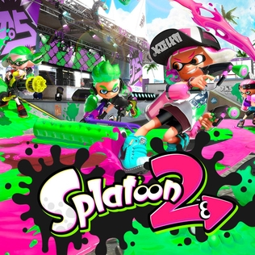

An Upgrade!
As the Nintendo Switch was revealed in 2017, clips were revealed to show a possible sequel to the first game. It wasn't confirmed at that time however, due to how the clips were shown in the trailer. It wasn't until January 13, 2017 when Splatoon 2 was officially unveiled to the public. And after the demos of the Splatfests and the Turf Wars, the game was released worldwide in mid July 2017. Critics say that it took what was great about the predecessor and added new things to make it stand out more. The game sold twice as more copies as its predecessor, making Splatoon 2 one of the best-selling games of the Nintendo Switch.
| Splatoon 2 - | Wider selection of weapons | New game modes in multiplayer |
| Splatoon - | Decent selection of weapons | Had your basic games modes in multiplayer |